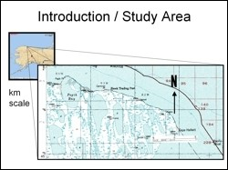
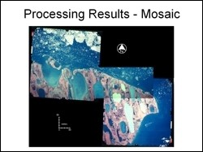
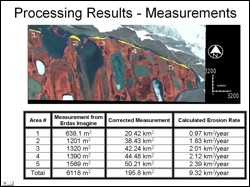

 Cape Halkett is located on the northern coast of Alaska, located between 70° 45' N and 70° 55' N; and between 152° 05' E and 153° 00' E. The coastal areas have experienced notable erosion over time. The objective of this study was to compare old color infrared photographs of the study area acquired in 1979 with Landsat ETM imagery from 2000 to assess the magnitude of coastal erosion in the study area.
 For this study three aerial photographs from July 1979 were purchased from the Map office at the Geophysical Institute. The images were georeferenced with the help of published topographic maps using carefully selected manual control points. Using mosaic tool or Erdas Imagine, the there photographs were then mosaiced to give a complete picture of the study area. This mosaic was then compared with the georeferenced Landsat image of 2000.
 Digital image subtraction technique was applied to detect and measure areas of change. The areas that suffered erosion are shown in yellow in the figure. The total erosion in the study area and the average rate of erosion based on these two data sets was computed. Based on image dataset alone, results indicate that between 1979 and 2001, the study area experienced 5.806 sq km of erosion along its 75 km coastline, which amounts to 0.28 sq km of land per year. It could be said that Cape Halkett's coastline receded inland at an average of 3.73 meters per year. A higher temporal resolution dataset and more detailed analysis is required to validate and refine the results.